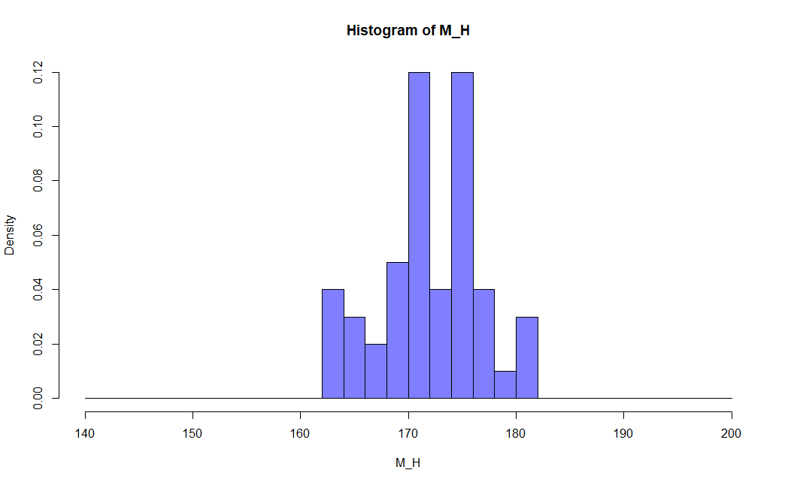
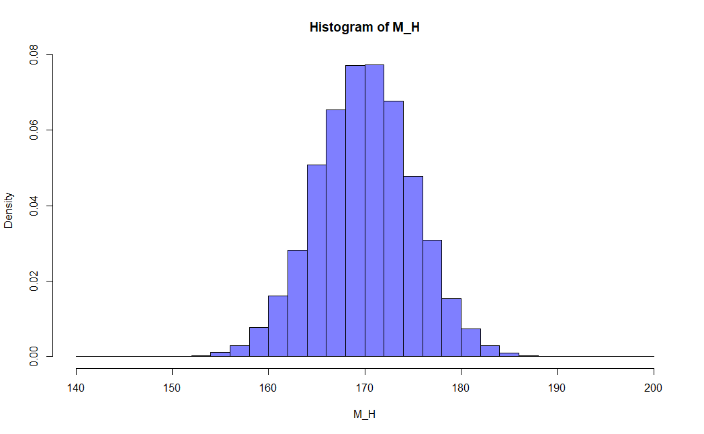
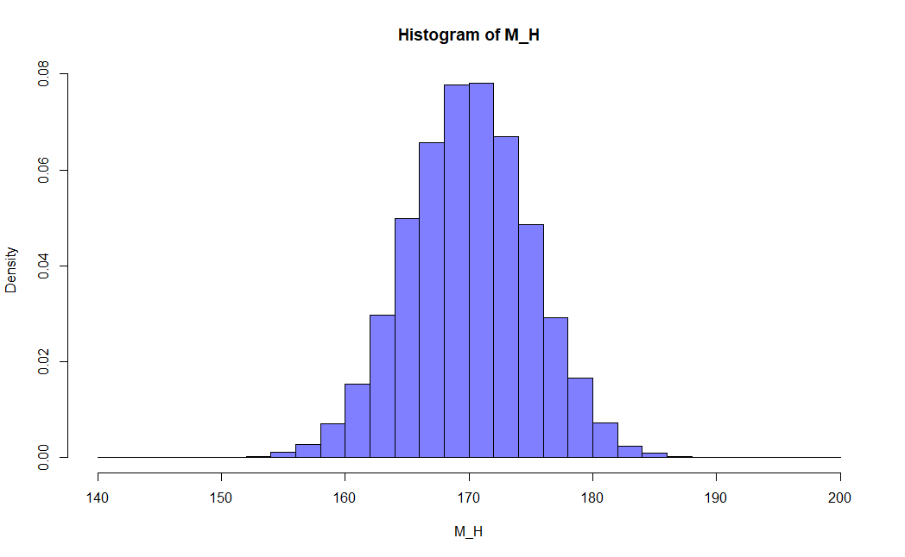
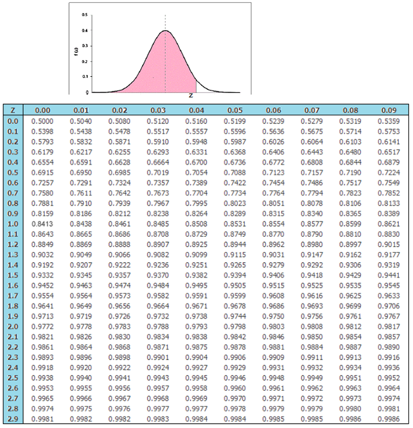
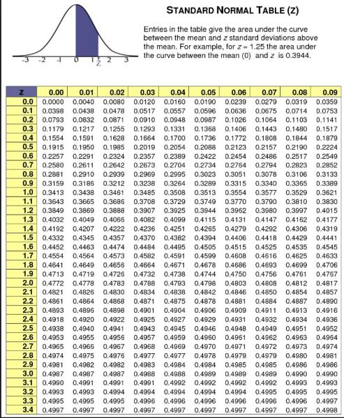
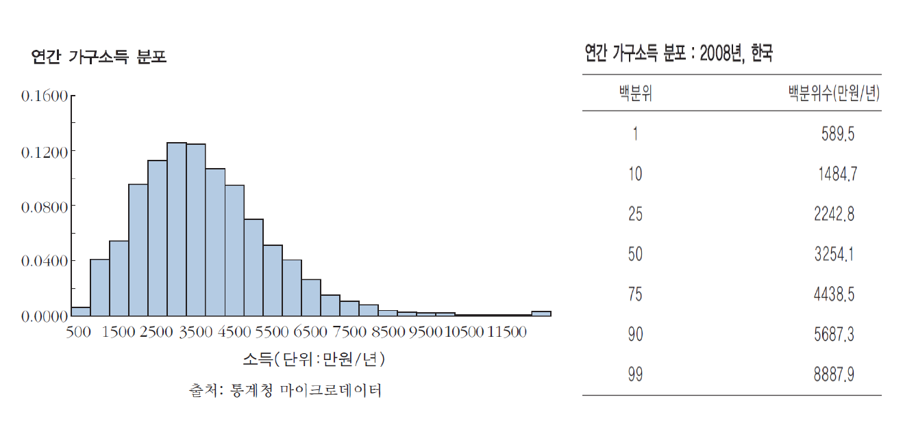
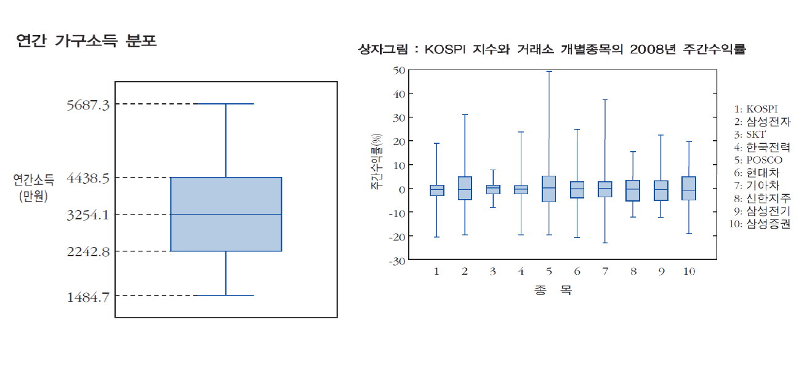

3강. 정규분포와
정규분포로의 근사
지난 강의 요약
- 통계학은 복잡한 자료를 정리, 분석, 추론하여 유용한 정보를 얻기 위한 도구이다.
- 우리가 관측하는 대부분의 자료는 실제 관심 대상이 되는 전체 집단인 모집단에서 추출한 표본 자료이며, 표본의 특성을 나타내는 통계량을 통해서 모집단의 특성인 모수를 추정해 볼 수 있다.
- 이와 같이 통계학은 표본을 정리, 요약하는 기술통계학과 표본의 통계량으로 관심 대상인 모집단을 추론하는 추론통계학으로 크게 나눌 수 있다.
- 기술통계학 차원에서 자료를 요약하는 방법은 자료의 분포를 그래프로 그리는 것과 숫자인 통계량으로 표현하는 방법이 있다.
- 자료를 일정한 구간으로 나누고 그 구간 내 자료의 빈도를 기입한 표를 도수분포표라고 하며, 구간별 자료의 빈도를 밀도단위(상대도수/구간길이)로 표현한 그래프를 히스토그램이라고 한다.
지난 강의 요약
- 자료를 숫자로 요약하는 가장 간단한 방법은 자료가 어떤 지점을 중심으로 분포하고 있는지를 나타내는 중심경향성 통계량을 사용하는 방법이며 대표적인 것이 평균, 중앙값, 최빈값이다.
- 평균은 자료의 총합을 자료 개수로 나눈 것으로서 자료의 무게중심을 의미하며, 중앙값은 자료를 크기 순으로 나열했을 때 50%에 위치한 값을 의미하며, 최빈값은 자료 내에서 빈도가 가장 큰 값을 의미한다.
- 평균은 극단적인 값에 민감하지만 중앙값은 극단적인 값의 영향을 받지 않는다.
- 평균은 자료의 중심경향성을 보여주지만 자료가 중심에서 얼마나 퍼져 있는지, 즉 분산된 정도는 알려주지 않기 때문에 자료의 특성을 명확히 알기 위해서는 표준편차 혹은 분산을 함께 보아야 한다.
- 평균과 표준편차를 알면 자료의 전반적인 분포를 설명할 수 있다.
자료 관측 횟수의 증가와 수렴
성인 남성의 키에 대한 히스토그램
$f(X)=\dfrac{1}{\sqrt{2\pi}\sigma}\,e^{-\frac{1}{2}\left(\frac{X-\mu}{\sigma}\right)^{2}}$
$(-\infty < x < +\infty)$



밀도 = 상대빈도 / 구간길이
밀도 * 구간길이 = 상대빈도
= 전체 자료에서 해당 구간이 차지하는 비율
= 해당 구간의 자료가 출현할 확률 = 구간의 면적 = 분포를 나타내는 함수식의 구간 적분 값
분포와 정규분포
(frequency table)
자료를 일정한 계급/구간으로 나누어 해당 구간에 속하는 자료의 빈도를 나타낸 분포표
자료를 무한히 관측하면?
→ 해당 자료의 특정 구간 혹은 값이 출현할 확률(자료의 빈도)에 대한 분포를 파악할 수 있음
이를 하나의 함수식으로 근사하여 표현하면?
→ 해당 자료의 특정 구간 혹은 값이 출현할 확률(자료의 빈도)에 대한 분포를 언제든지 재현할 수 있음
그 중 자연 현상을 관측하여 만든 자료에서 가장 빈번하게 나타나는 분포를 수식으로 표현한 것
→ 정규분포 (normal distribution)
정규분포 (normal distribution)
정규분포의 사례
- 저울의 측정오차
- 키와 몸무게의 분포
- 식물의 꽃잎 개수
:
대체로 평균을 중심으로 수렴하고
일부의 오차만 존재하는 경우
평균 $\mu$, 표준편차 $\sigma$인 변수 X에 대한 정규분포
$X \sim N(\mu,\ \sigma^{2})$
$f(X)=\dfrac{1}{\sqrt{2\pi}\sigma}\,e^{-\frac{1}{2}\left(\frac{X-\mu}{\sigma}\right)^{2}}$
$(-\infty < x < +\infty)$ $\mu,\ \sigma$에 따라 곡선의 형태가 결정
정규분포 (normal distribution)
평균 $\mu$, 표준편차 $\sigma$인 변수 X에 대한 정규분포
$X \sim N(\mu,\ \sigma^{2})$
$f(X)=\dfrac{1}{\sqrt{2\pi}\sigma}\,e^{-\frac{1}{2}\left(\frac{X-\mu}{\sigma}\right)^{2}}$
$(-\infty < x < +\infty)$
- 평균을 중심으로 좌우 대칭 (symmetric)
- 종 모양 (bell-shaped)
- 봉우리가 하나 (single-peaked)
평균과 표준편차에 따라 중심과 퍼진 정도는 달라지지만
전반적인 모양은 그대로이며,
평균±n표준편차의 비율도 일정함
정규분포 (normal distribution)
평균 $\mu$, 표준편차 $\sigma$인 변수 X에 대한 정규분포
$f(X)=\dfrac{1}{\sqrt{2\pi}\sigma}\,e^{-\frac{1}{2}\left(\frac{X-\mu}{\sigma}\right)^{2}}$
$(-\infty < x < +\infty)$
가) 표준편차가 같고 평균값이 다른 경우 (μ1 < μ2 < μ3, σ1 = σ2 = σ3)
나) 표준편차가 다르고 평균값이 같은 경우 (μ1 = μ2 = μ3, σ1 > σ2 > σ3)
정규분포로의 근사 (normal approximation)
만약 어떤 확률변수가 정규분포와 유사한 형태의 분포를 지니고 있다면
그 분포를 정규분포로 간주하고,
표준화를 통해 어떤 구간 내에 속한 숫자의 비율을 구할 수 있다.
“평균 50, 표준편차 5”인 분포
→ 40~60 사이에 속한 자료는 대략 몇 %일까?
정규분포로의 근사 (normal approximation)
만약 어떤 확률변수가 정규분포와 유사한 형태의 분포를 지니고 있다면
그 분포를 정규분포로 간주하고,
표준화를 통해 어떤 구간 내에 속한 숫자의 비율을 구할 수 있다.
$X \sim N(50,\ 5^{2})$ $f(X)=\dfrac{1}{\sqrt{2\pi}*5}\,e^{-\frac{1}{2}\left(\frac{X-50}{5}\right)^{2}}$
정규분포곡선 아래 구간의 면적(= 그 구간 내에 속한 자료의 비율 = 그 구간의 값이 나올 확률)을 구하는 법
- (표준)정규분포곡선을 구간에 대하여 적분
- 구간의 값을 표준화한 뒤 표준정규분포표를 통해 면적을 도출
자료 변환에 따른 평균과 표준편차의 변화
상수 합: 자료에 모두 일정한 상수를 더하면?
- 평균 = 상수만큼 증가
- 표준편차 = 일정
상수 배: 자료에 모두 일정한 상수를 곱하면?
- 평균, 표준편차 = 상수 곱만큼 증가
Q) 변수 X에 평균만큼 빼고,
1/표준편차만큼 곱하면
변수 X의 평균과 표준편차는 어떻게 변할까?
변수의 표준화 (standardization)
Q) 변수 X에 평균만큼을 빼고, 1/표준편차만큼을 곱하면 기존 평균과 표준편차는 어떻게 변할까?
〈변수 X의 평균 $\mu$, 표준편차 $\sigma$〉
① 상수 합: 평균은 상수만큼 변화, 표준편차는 일정
→ 평균 $=\mu-\mu=0$
표준편차 $=\sigma$
② 상수 배: 평균과 표준편차는 모두 상수 곱만큼 변화
→ 평균 $=(\mu-\mu)*1/\sigma=0$
표준편차 $=\sigma*1/\sigma=1$
표준화(standardization)
특정 변수 X에서 평균을 빼고 표준편차로 나누어
평균이 0이고 표준편차가 1인 새로운 변수 Z로 변환하는 과정
$Z=\dfrac{X-\mu}{\sigma}$
이걸 왜 할까?
→ 서로 다른 측정 단위를 지닌 변수를 모두 표준편차 단위로 변환
→ 서로 다른 변수들 간의 비교 용이
표준정규분포 (normal distribution)
평균 $\mu$, 표준편차 $\sigma$인 변수 X에 대한 정규분포
$X \sim N(\mu,\ \sigma^{2})$
$f(X)=\dfrac{1}{\sqrt{2\pi}\sigma}\,e^{-\frac{1}{2}\left(\frac{X-\mu}{\sigma}\right)^{2}}$
$(-\infty < x < +\infty)$
평균 0, 표준편차 1인 변수 Z에 대한 정규분포
= 표준정규분포 (standard normal distribution)
$Z \sim N(0,1)$
$f(Z)=\dfrac{1}{\sqrt{2\pi}}\,e^{-\frac{1}{2}z^{2}}$
$(-\infty < z < +\infty)$
정규분포로의 근사 (normal approximation)
만약 어떤 확률변수가 정규분포와 유사한 형태의 분포를 지니고 있다면
그 분포를 정규분포로 간주하고,
표준화를 통해 어떤 구간 내에 속한 숫자의 비율을 구할 수 있다.
| z | .00 | .01 | .02 |
|---|---|---|---|
| 0.0 | .0000 | .0040 | .0080 |
| 0.1 | .0398 | .0438 | .0478 |
| 0.2 | .0793 | .0832 | .0871 |
| 0.3 | .1179 | .1217 | .1255 |
| 0.4 | .1554 | .1591 | .1628 |
| 0.5 | .1915 | .1950 | .1985 |
| 0.6 | .2257 | .2291 | .2324 |
| 0.7 | .2580 | .2611 | .2642 |
| 0.8 | .2881 | .2910 | .2939 |
| 0.9 | .3159 | .3186 | .3212 |
| 1.0 | .3413 | .3438 | .3461 |
| 1.1 | .3643 | .3665 | .3686 |
만약 표준화된 구간 값이 −0.4 ~ 0.7이라면
- 0 ~ 0.7까지의 면적을 표준정규분포표에서 찾고 (0.2580)
- 0 ~ 0.4까지의 면적을 표준정규분포표에서 찾은 뒤 1)과 합함 (0.1554)
정규분포로의 근사 (normal approximation)
만약 어떤 확률변수가 정규분포와 유사한 형태의 분포를 지니고 있다면
그 분포를 정규분포로 간주하고,
표준화를 통해 어떤 구간 내에 속한 숫자의 비율을 구할 수 있다.
$X \sim N(50,\ 5^{2})$
$f(X)=\dfrac{1}{\sqrt{2\pi}*5}\,e^{-\frac{1}{2}\left(\frac{X-50}{5}\right)^{2}}$
자료가 정규분포와 유사할 경우
- 평균의 −1SD ~ +1SD 구간 내에 약 68% 자료가 포함
- 평균의 −2SD ~ +2SD 구간 내에 약 95% 자료가 포함
- 평균의 −3SD ~ +3SD 구간 내에 약 99.7% 자료가 포함
40 = 평균 50 − 2표준편차
60 = 평균 50 + 2표준편차
정규분포로의 근사 (normal approximation)
연습문제) 매일 영업이 끝난 뒤 어느 은행에 남아있는 잔고는 평균이 1조원이고,
표준편차가 0.2조원이다.
이 분포가 정규분포에 잘 근사된다고 할 때, 이 은행의 잔고가
지급준비금인 0.7조원 이하로 떨어질 가능성은?
(답: 6.68%)
| μ | + 0.00 | + 0.01 |
|---|---|---|
| 0.0 | 0.5000 | 0.5040 |
| 0.1 | 0.5398 | 0.5438 |
| 0.2 | 0.5793 | 0.5832 |
| 0.3 | 0.6179 | 0.6217 |
| 0.4 | 0.6554 | 0.6591 |
| 0.5 | 0.6915 | 0.6950 |
| 0.6 | 0.7257 | 0.7291 |
| 0.7 | 0.7580 | 0.7611 |
| 0.8 | 0.7881 | 0.7910 |
| 0.9 | 0.8159 | 0.8186 |
| 1.0 | 0.8413 | 0.8438 |
| 1.1 | 0.8643 | 0.8665 |
| 1.2 | 0.8849 | 0.8869 |
| 1.3 | 0.9032 | 0.9049 |
| 1.4 | 0.9192 | 0.9207 |
| 1.5 | 0.9332 | 0.9345 |
| 1.6 | 0.9452 | 0.9463 |
두 가지의 정규분포표


분위수
어떤 자료가 정규분포를 잘 따를 경우 평균과 표준편차만 있으면
자료를 거의 100% 묘사할 수 있다
→ 하지만 자료가 정규분포를 안따르면?
자료가 오른쪽으로 치우친(right-skewed) 경우: 최빈값 < 중앙값 < 평균
평균 3,486만원 / 표준편차 1,829만원
→ 평균이 분포를 잘 설명하지 못한다!

분위수
어떤 자료가 정규분포를 잘 따를 경우 평균과 표준편차만 있으면
자료를 거의 100% 묘사할 수 있다
→ 하지만 자료가 정규분포를 안따르면?
백분위수 (percentile)
하나의 히스토그램을 100개의 균등한 영역으로 나눈 99개의 경계점
(즉, 자료의 1%, 2%, 3%, … , 100% 지점)
사분위수 (quantile)
백분위수를 대표하는 지점으로서, 제1사분위(제25백분위), 제2사분위(제50백분위 = 중앙값), 제3사분위(제75백분위)
사분위수 범위 (interquartile range, IQR)
제3사분위 – 제1사분위
상자그림(boxplot)
어떤 자료의 분포를
“최소값, 제1사분위수, 제2사분위수(중앙값), 제3사분위수, 최대값”의
다섯가지 통계량으로 나타낸 그림

상자그림(boxplot)
어떤 자료의 분포를
“최소값, 제1사분위수, 제2사분위수(중앙값), 제3사분위수, 최대값”의
다섯가지 통계량으로 나타낸 그림
오늘 강의 요약
- 자연현상의 상당 수는 평균을 중심으로 좌우 대칭인 종모양의 정규분포를 따른다.
- 정규분포는 평균과 표준편차에 따라 그 모양과 크기가 달라진다.
- 특정 현상이 정규분포를 따른다면 그 현상의 평균과 표준편차만으로 해당 현상의 발생빈도를 완벽하게 묘사할 수 있다.
- 정규분포 중에서 평균이 0이고 표준편차가 1인 정규분포를 표준정규분포라 한다.
- 어떤 자료에서 평균을 빼고 이를 표준편차로 나눈 것을 자료의 표준화라고 하며, 특정 자료가 정규분포를 따를 경우 이를 표준화 한 값은 표준정규분포를 따른다.
오늘 강의 요약
- 특정 자료가 정규분포를 따를 때 해당 자료는 평균을 중심으로 ±1표준편차 이내에 전체 자료의 약 68%가, ±2표준편차 이내에 전체 자료의 약 95%가 포함된다.
- 특정 자료가 정규분포와 유사한 분포를 따를 경우 이 분포를 정규분포로 간주하고, 정규분포표를 사용하여 특정 구간 내에 속한 자료의 비중을 계산할 수 있으며 이를 정규분포로의 근사라 한다.
- 만약 특정 자료가 정규분포를 따르지 않을 경우 평균과 표준편차만으로 이 자료의 분포를 명확히 묘사할 수 없으며, 이 경우 자료를 100개의 균등한 영역으로 나눈 지점의 값인 분위수를 사용하는 것이 도움이 된다.
- 분위수를 활용하여 자료의 분포를 나타내는 대표적인 방식으로는 상자그림이 있다.
- 히스토그램이 서로 다른 자료의 분포를 비교하기 어려운 반면, 상자그림은 서로 다른 자료 간 분포를 비교하기 용이하다.
Q & A
권규상 Kyusang Kwon
kyusang.kwon@chungbuk.ac.kr